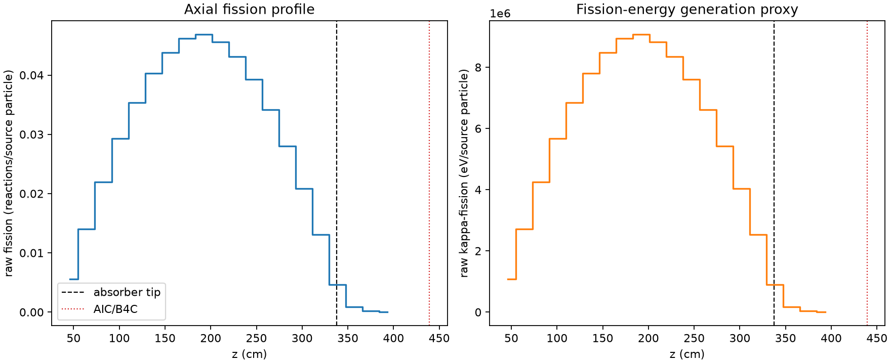
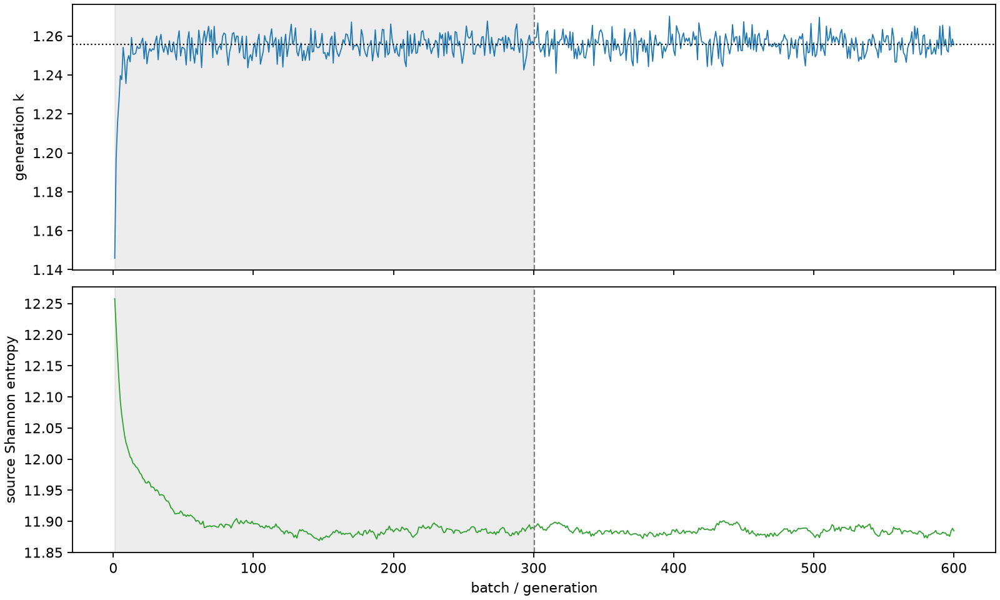

| field | value |
|---|---|
| experiment | V2-ADAPTIVE_01-0019 |
| k | 1.2557059763357084 |
| MC standard error | 0.00019165564944047348 |
| seconds | 1044.7824406769942 |
| acceptance | not_assessed |
| convergence | review_required |
Completed is output integrity only; physical and statistical review required. Zero tallies do not prove zero production or zero uncertainty.
| diagnostic | value |
|---|---|
| geometric fuel voxels | 5280 |
| zero fission tally voxels | 0 |
| low signal fuel voxels | 234 |
| low signal fission share | 6.560277111389043e-05 |
| low signal kappa share | 6.562473677291783e-05 |
| important fission share | 0.9500938070190741 |
| previous filter included | 5046 |
| duration estimate s | 1562.5173488400023 |
| actual minus estimate s | -517.7349081630082 |
| fission relative MC error | statistics |
|---|---|
| all_geometric_fuel | {"voxels": 5280, "positive_mean_voxels": 5280, "zero_mean_voxels": 0, "undefined_relative_error_voxels": 0, "median": 0.009762288029034734, "p95": 0.1571690254367868, "maximum": 0.43130573729641036} |
| low_signal | {"voxels": 234, "positive_mean_voxels": 234, "zero_mean_voxels": 0, "undefined_relative_error_voxels": 0, "median": 0.24099034150203363, "p95": 0.3209465414805444, "maximum": 0.43130573729641036} |
| important_95pct | {"voxels": 3670, "positive_mean_voxels": 3670, "zero_mean_voxels": 0, "undefined_relative_error_voxels": 0, "median": 0.008564477380578667, "p95": 0.013183961163112462, "maximum": 0.015652460614195333} |
| outside_previous_filter | {"voxels": 234, "positive_mean_voxels": 234, "zero_mean_voxels": 0, "undefined_relative_error_voxels": 0, "median": 0.24099034150203363, "p95": 0.3209465414805444, "maximum": 0.43130573729641036} |
| kappa_fission relative MC error | statistics |
|---|---|
| all_geometric_fuel | {"voxels": 5280, "positive_mean_voxels": 5280, "zero_mean_voxels": 0, "undefined_relative_error_voxels": 0, "median": 0.009752571578410765, "p95": 0.15685101823411, "maximum": 0.4305262691865103} |
| low_signal | {"voxels": 234, "positive_mean_voxels": 234, "zero_mean_voxels": 0, "undefined_relative_error_voxels": 0, "median": 0.2403874864724328, "p95": 0.32043964084097165, "maximum": 0.4305262691865103} |
| important_95pct | {"voxels": 3670, "positive_mean_voxels": 3670, "zero_mean_voxels": 0, "undefined_relative_error_voxels": 0, "median": 0.008555145343421368, "p95": 0.01316978628479012, "maximum": 0.015636581741042307} |
| outside_previous_filter | {"voxels": 234, "positive_mean_voxels": 234, "zero_mean_voxels": 0, "undefined_relative_error_voxels": 0, "median": 0.2403874864724328, "p95": 0.32043964084097165, "maximum": 0.4305262691865103} |
| axial bin | fission share | kappa-fission share |
|---|---|---|
| 1 | 0.010801036629977329 | 0.010801398550973599 |
| 2 | 0.02725265537512009 | 0.027252567011441117 |
| 3 | 0.04284859156082352 | 0.04284862673693993 |
| 4 | 0.05702164207921829 | 0.057021425427102826 |
| 5 | 0.06882756382451274 | 0.06882740644477607 |
| 6 | 0.07856770708145706 | 0.0785674758893832 |
| 7 | 0.0854145166890808 | 0.08541443663840673 |
| 8 | 0.09005607939704922 | 0.09005572436815086 |
| 9 | 0.09128542718962353 | 0.0912852199558134 |
| 10 | 0.08885814041532354 | 0.08885799782851564 |
| 11 | 0.08396525199017014 | 0.08396503122736465 |
| 12 | 0.07660941383064818 | 0.07660935584953338 |
| 13 | 0.06665534247256982 | 0.0666552803021423 |
| 14 | 0.05458965714499812 | 0.05458948252253173 |
| 15 | 0.0406294259572131 | 0.04062925266309536 |
| 16 | 0.025570647009010888 | 0.0255705220048887 |
| 17 | 0.008974831842734558 | 0.008975899357954877 |
| 18 | 0.0016397221812002908 | 0.0016403622509420595 |
| 19 | 0.0003579059846631617 | 0.0003580671720456855 |
| 20 | 7.444134460561158e-05 | 7.446779799785134e-05 |
Histories include the inactive-to-active transition at batch 300. kappa-fission approximates fission energy production, not total heat deposition.

